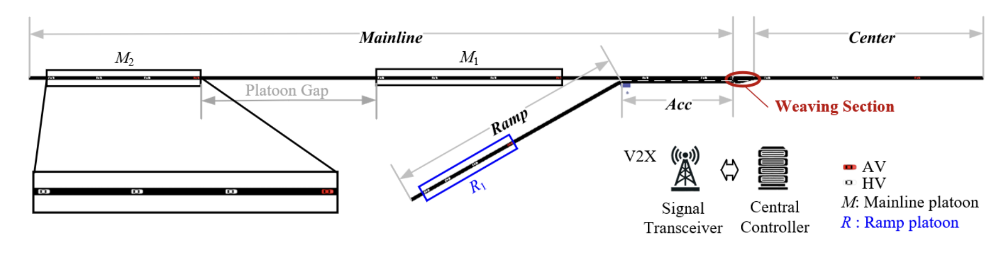
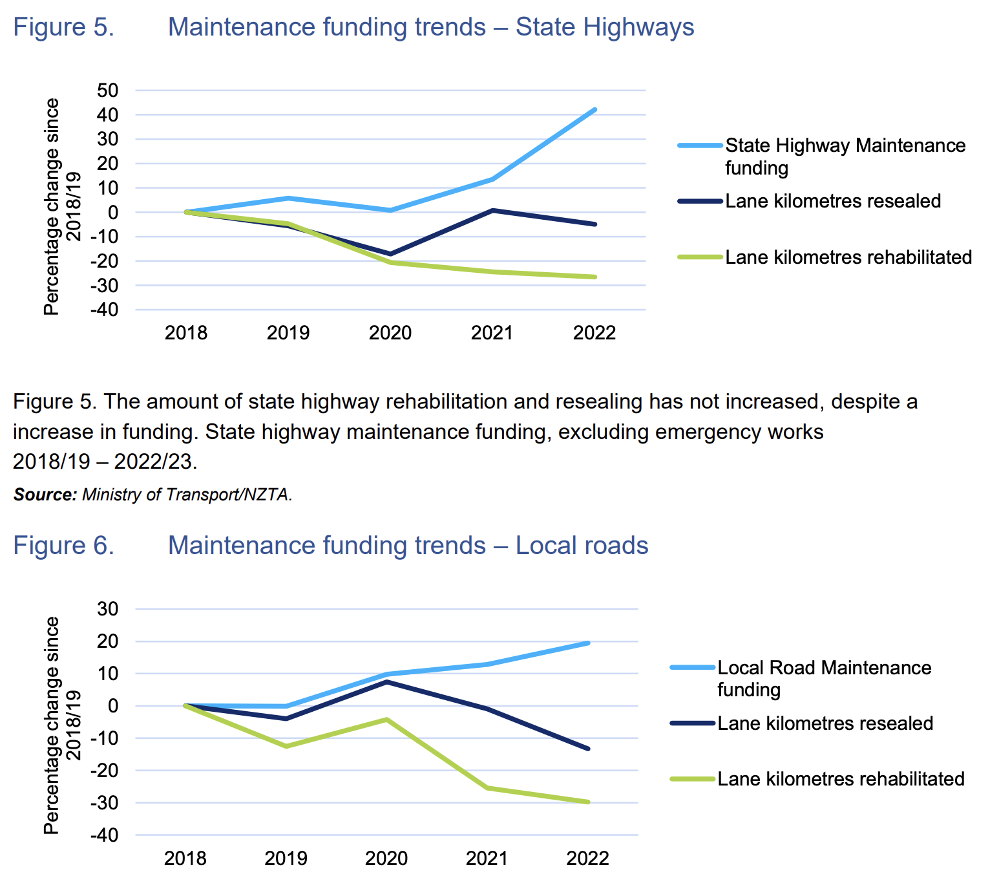

Machine Learning for Sustainable Future Transport Systems
Dr Minh Kieu
University of Auckland, New Zealand
Lab website:
https://transportanalytics.nz
The focus of my research
Improving transport resilience during and after natural disasters
Reduce transport carbon footprints, and improving sustainability in transportation
About me
- 2020-: Senior Lecturer, University of Auckland, NZ
- 2018-2019: Research Fellow, University of Leeds, UK
- 2016-2018: Research Scientist, Data61, CSIRO, Australia
- 2011-2016: PhD and Research Associate at Queensland University of Technology, Australia
Founded: 1883
Total enrollment: 40,000
QS World University Ranking: 65
QS World University Rankings by Subject 2024: Civil and Structural Engineering: 46
Transport Analytics Research Lab (TARLab)
https://transportanalytics.nz
6 PhD students
Focus:
Improving transport resilience
Reducing transport carbon footprint
Agenda
1. Urban Transport Modelling for Sustainable Well-being
2. Synthetic data generation
3. Dynamic Wireless Charging of Autonomous Vehicles
4. Guided Merging using Autonomous Vehicles
5. Rapid Resilience
1. Urban Transport Modelling for Sustainable Well-being in Hanoi (2020-2022)
Motorbikes are associated with many traffic issues in Hanoi
A potential motorbike ban in the CBD of Hanoi
How do people react to that?
We survey 30,000 respondents, and obtained the census data for 500,000 Hanoians
Individual perceptions to important transport policies
Explore solutions


People don't mind congestion if they are inside a car...

There's a gap between intentions and actual choices

Hanoi-UTM project: Publications
Kieu et al. (2023) Factors affecting perceptions in transport–A deep dive into the motorbike ban in Hanoi, Vietnam. Case Studies on Transport Policy 11, 100958
Kieu et al. (2024) An open dataset on individual perceptions of transport policies. Scientific data 11 (1), 104
Kieu et al. (2024) Evaluating public sentiment towards transport policies: A causal analysis of the motorbike ban in Hanoi. Case Studies on Transport Policy 16, 101203
2. Synthetic Big Data of Human Activities -- SynAc (2020-2022)
Funded by FRDF Funding, University of Auckland

Kieu, Meredith and Raith (2023) Synthetic Generation of Trip Data: The Case of Smart Card. Data Science for Transportation 5 (2), 14
Smart Card data in transportation

Challenges with synthetically generating Smart Card data
Non-Gaussian distributions
Mixed data types
Highly imbalanced and multi-modal data
On SynAc:
Apply a two machine learning methods to model and generate synthetic Smart Card data
Compare and contrast the two methods

Bayesian Network
Directed acyclic graph (DAG) with a variable and a conditional probability associated with each node.
Stage 1: shape learning using a Hill Climbing algorithm
Stage 2: Fit model's parameters using an Expectation-Maximisation approach
Stage 3: Generate synthetic Smart Card data samples

Generative Adversarial Networks
Two neural networks contest with each other in a game
1000 iterations
Dimension of the Generator: (256,256,256)
Dimension of the Discriminator : (256,256,256)
Distribution of tag on and tag off timestamps

Both algorithms can learn the distributions of tag on and tag off times well
Distribution of tag on at different travel zones

BN does better in learning the spatial distribution of data

Chord diagrams of Origin and Destination
BN does better in learning the joint spatial distribution of data
Joint distribution: travel time

BN can learn travel time better
Joint distribution: travel time
Joint distribution: travel time

What's next?
Major challenges with sequential and spatial data

Wirelessly Powered Transport Infrastructure for a Low-carbon Future (2021-2026)
MBIE Endeavour Programme
Charging of Electric Vehicles: Wired or Wireless
Wireless: Static or Dynamic
5-year research programme between Transport, Electrical, Science and Bussiness School at the University of Auckland
In collaboration with ASPIRE (5-year NSF Research programme): Utah State, Purdue, Colorado, Virginia Tech, etc https://aspire.usu.edu/

With dynamic wireless charging, can Shared Autonomous Vehicles operate continuously?
Case study in Auckland, New Zealand


State-of-charge model
\[\begin{aligned} \text{SOC}(t) &= \frac{Q_0 - \int_0^{T_{cur}} I(t) \, dt}{Q_{bat}} \\ \end{aligned} \] \[\begin{aligned} I(t) &= \frac{V_{\text{oc}}(t) - \sqrt{V_{\text{oc}}^2(t) - 4 \cdot R_0 \cdot (P_{\text{discharged}}(t) + P_{\text{charged}}(t))}}{2 \cdot R_0} \\ \end{aligned} \]SUMO (traffic simulation model) for link costs (travel time)
Optimisation problem
\[\begin{aligned} \text{Objective:} \quad \min \sum_{i,j} cost_{ij} x_{ij} + \lambda_1 \cdot \sum \Delta SOC \\ \end{aligned} \]How does routing works?


Deep Reinforcement Learning with Heterogeneous Multi-head attention mechanism


Sensitivity analysis
Continous AV project: Publications
Wang, Kieu and Ranjitkar (2024) Enabling Continuous Operation of Shared Autonomous Vehicles With Dynamic Wireless Charging. IEEE Transactions on Intelligent Transportation Systems.
Wang et al. (TBA) Deep Reinforcement Learning based Approach to Shared Autonomous Vehicles Pickup, Delivery, and Charging Problem. Transportation Research Part C: Emerging Technologies (Under review)

What if we are stuck on traffic?

Split to two levels now to deal with traffic congestion
Also consider battery state-of-health now
Continous AV project (with traffic congestion): Publications
Wang et al. (TBA) A Two-Stage Deep Reinforcement Learning Framework for to Enable Continuous Operation Shared Autonomous Vehicles under Dynamic Traffic Scenarios. Transportation Research Part C: Emerging Technologies (Under review)
Summary
AVs can operate continuously without stopping!
State-of-charge, state-of-health and traffic are not really an issue
Future works:
Incidents
Vehicle-to-grid interaction
Guided Control of Mixed Platoon
Autonomous vehicles can help us merge like a zip!
Mixed Platoon Guided Control
Mixed Platoon Guided Control


Summary of Guided Control for Mixed Platoon project
AVs can guide human vehicles to reduce congestion and unsafe breaking
It works, but more challenging than we first thought
Future works:
Uncertainty
Intersection
Funding!
Funding for highway improvements and operations are highest and increasing. However...
QuakeCore's Inter-disciplinary Theme 3 - A Resilient Aotearoa New Zealand Transport System
5. Rapid Resilience: Data-Driven Strategies for Prioritizing Transport Infrastructure Rehabilitation after Natural Disasters
- Better use of our limited funding for higher standards of transport infrastructure maintanance and faster rehabilitation after natural disasters.
- Enhance community resilience through responsive decision-making.
Main Research Challenges
1. Agent-based models of the interactions between infrastructure systems
2. Predictive capabilities for failures or rehabilitation needs
3. Optimisation of the limited funding to critical infrastructure

Call for collaboration
Resilience, sustainable transport problems
I can host visiting scholars, or supervise Indonesia's LDPD students
Machine Learning for Sustainable Future Transport Systems
Thank you!
Questions?
Lab website:
https://transportanalytics.nz